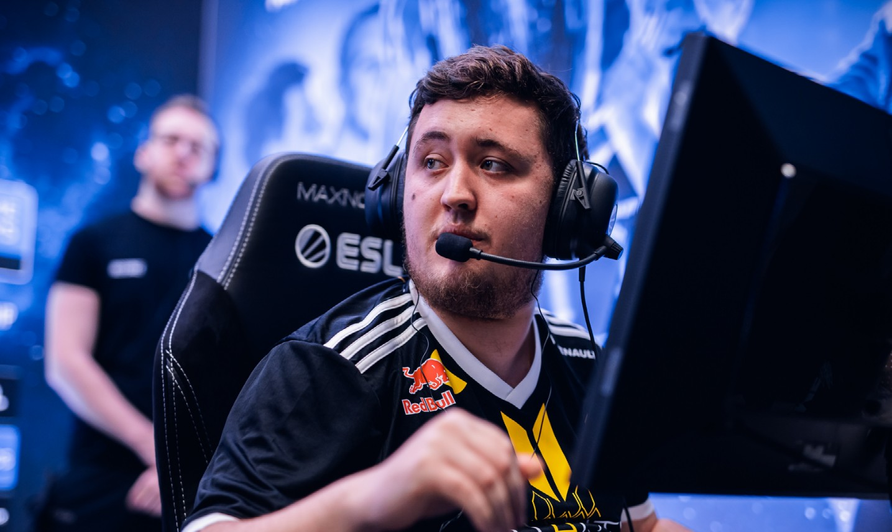
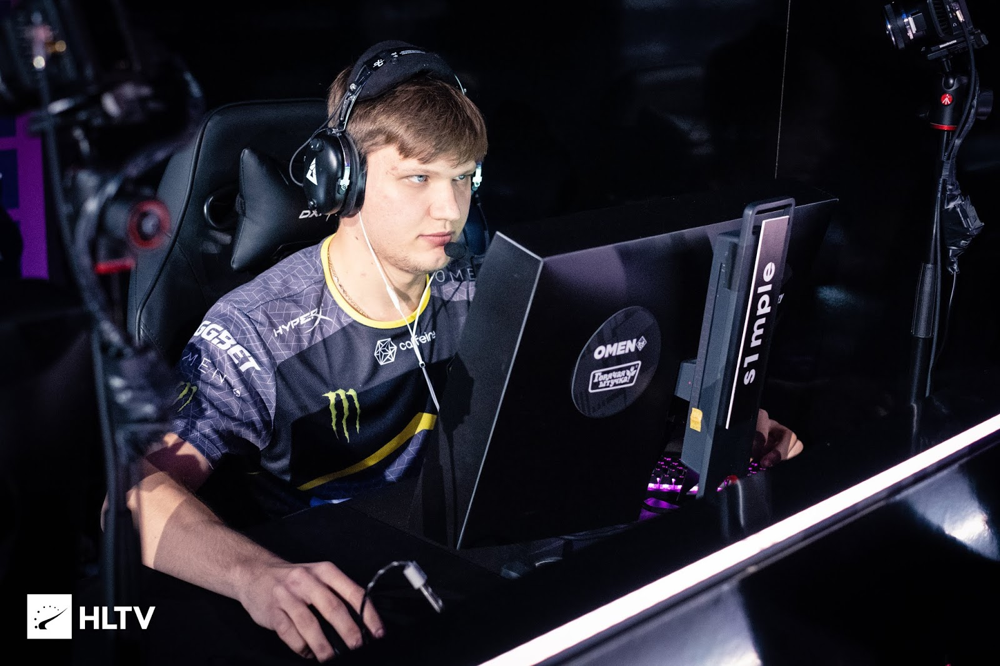

Противостояние ZyWoo и S1mple закончиться на IEM Global Challenge

Последние два года на CS-сцене идет непрекращающееся соперничество между двумя лучшими игроками в CS:GO: Симплом и Зайву. В 2019 году титул лучшего каэсера года решил только последний турнир в декабре – тогда француз победил в рейтинге благодаря победе на EPICENTER 2019 и титулу MVP.
В 2020-м противостояние стало еще жестче. Несмотря на переход турниров в онлайн, S1mple и ZywOo нисколько не растеряли форму, а шли нос к носу на крупных чемпионатах и перед началом IEM Global Challenge – последнего турнира по CS:GO в 2020 году – оба имеют рейтинг 1,29.
По ходу IEM Global Challenge Костылеву было бы неплохо выдать что-то вроде недавнего клатча Эрбо на Mirage, когда он с пистолетом закрыл всю команду NAVI. Это пример самого свежего хайлайта, который останется в памяти на ближайшее время и, возможно, повлияет на субъективное мнение авторов рейтинга. Bсе же февральские геройства s1mple в Катовице уже позабылись.
Райз совершенно прав в своих последних роликах, говоря о задачах команды NAVI на конец сезона. В ситуации, когда никаких ожиданий и целей нет, на первых план выходит помощь своему капитану. Не факт, что финальная дуэль с ZywOo решит что-то в плане рейтинга, но как минимум шанс на такой матч Костылев заслужил.